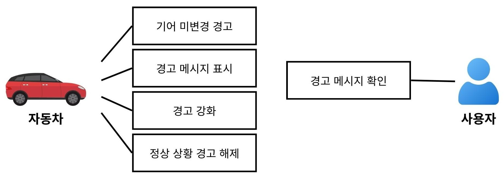
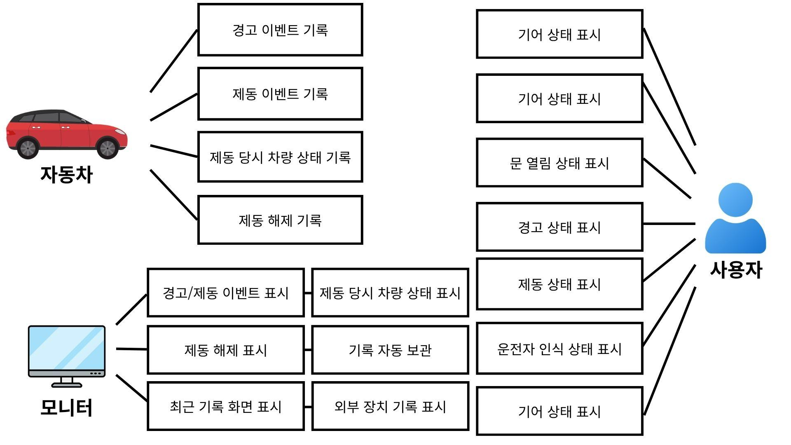
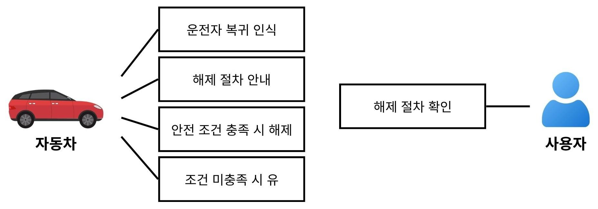
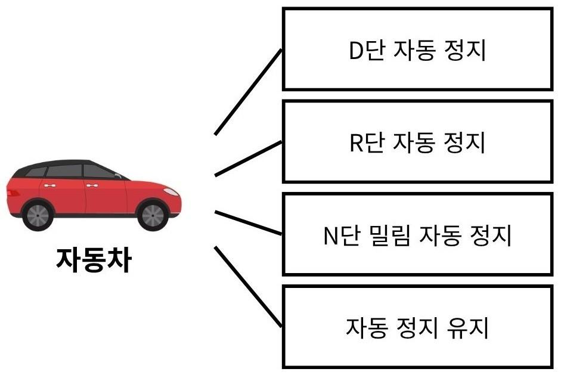
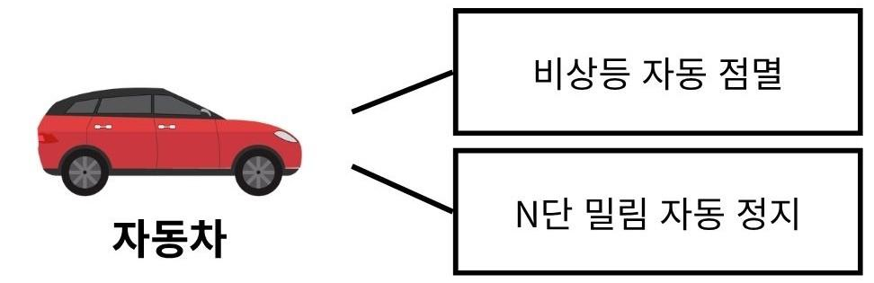
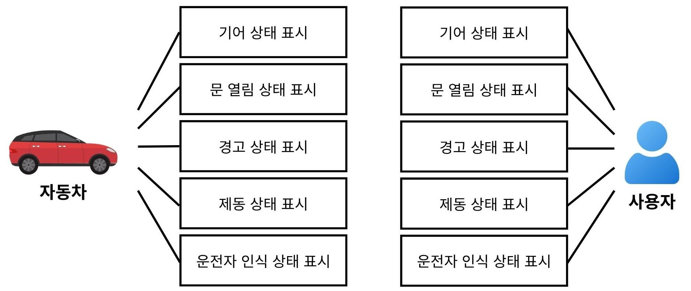
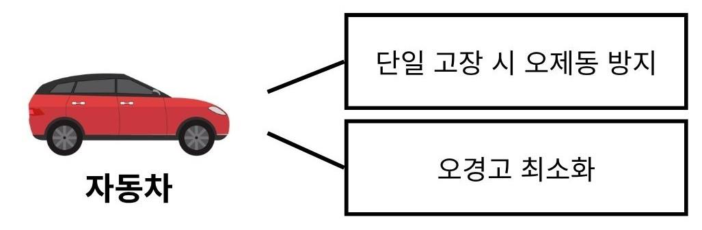
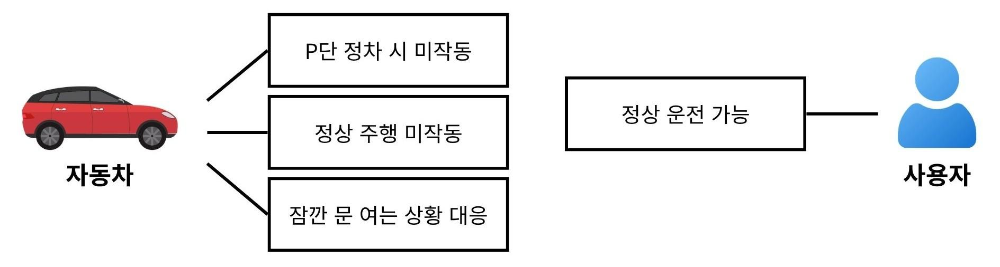
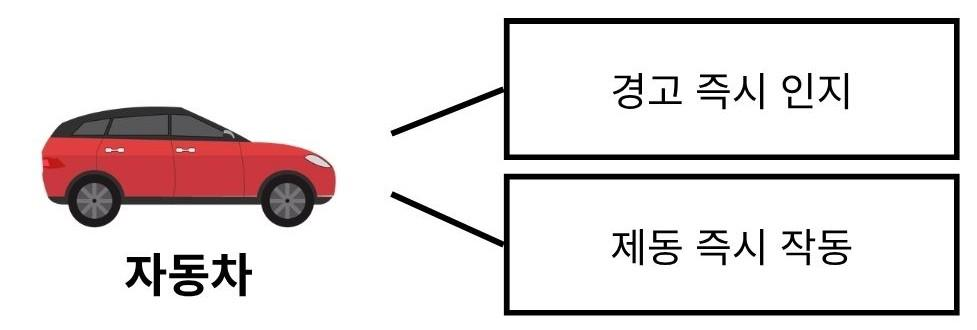

| A | B | C | D | E | F | G | H | I | J | K | L | M | N | O | P | Q | R | S | T | U | V | W | |
|---|---|---|---|---|---|---|---|---|---|---|---|---|---|---|---|---|---|---|---|---|---|---|---|
1 | |||||||||||||||||||||||
2 | |||||||||||||||||||||||
3 | |||||||||||||||||||||||
4 | 사용자 요구사항 정의서 - VAPS (차량 무인 이동 방지 자동 제어 시스템) | 제외된 요구사항 | MON (Monitoring Program, MON) 서브 시스템 | ||||||||||||||||||||
5 | 요구사항 ID | 요구사항 명 | 기능 ID | 기능명 | 상세 설명 | 필수 데이터 | 선택 데이터 | 중요도 | 기능명 | 상세 설명 | 제외 이유 | 목적 | |||||||||||
6 | 1. 기능 요구사항 | 장애물 접근 시 긴급 정지 | 차량이 움직이는 중에 앞이나 뒤에 사람이나 물체가 가까이 있으면, 즉시 멈춰야 한다. | 본 프로젝트의 핵심 목표는 ‘운전자 부재 상태에서의 차량 밀림 방지’이며, 장애물 회피·충돌 방지 기능은 ADAS(첨단 운전자 보조 시스템) 영역에 해당하여 프로젝트 범위를 초과함. | 본 서브시스템은 VAPS 제어 시스템에서 발생하는 경고, 자동 제동, 제동 해제 이벤트를 수신 및 저장하고, 사용자가 최근 이력과 상세 정보를 조회할 수 있도록 하며, 필요 시 외부 장치로 전체 로그를 전송하는 것을 목적으로 한다. | ||||||||||||||||||
7 | SAFE01 | 하차 시 안전 경고 | SAFE01_WARN01 | 기어 미변경 경고 | 운전자가 기어를 P단에 놓지 않은 상태에서 문을 열면, 경고음이 울려야 한다 | 문 열림 여부, 기어 상태 | - | 중 | 부품 개별 교체 | 특정 센서나 부품에 문제가 생겼을 때, 해당 부분만 교체할 수 있어야 한다. | 해당 요구사항은 시스템 동작 기능이 아닌 하드웨어 구조 및 정비성 설계 영역에 해당함. 본 프로젝트는 제어 로직 및 소프트웨어 중심 개발이므로, 하드웨어 설계 범위를 벗어남. | 역할 | |||||||||||
8 | SAFE01_WARN02 | 경고 메시지 표시 | 경고음과 함께 화면에 'P단으로 변경하세요' 등의 안내 메시지가 표시되어야 한다 | 기어 상태 | 경고 메시지 내용 | 중 | 고장 센서 자동 감지 | 문제가 발생했을 때 어떤 부분이 고장인지 쉽게 파악할 수 있어야 한다. | 고장 진단 및 진단 정보 제공은 별도의 진단 시스템 영역에 해당하며, 본 프로젝트 범위를 벗어나 제외하였다. | · UART를 통해 ECU가 송신한 이벤트 데이터를 수신한다. · 수신 데이터를 해석하여 이벤트 로그로 변환한다. · 이벤트 시각, 종류, 당시 차량 상태를 저장한다. · 최근 이벤트 목록과 상세 화면을 제공한다. · 외부 장치 연결 시 전체 로그를 전송한다. · 저장 공간이 가득 차면 가장 오래된 로그부터 삭제하여 최근 로그를 유지한다. | |||||||||||||
9 | SAFE01_WARN03 | 경고 강화 | 경고음이 울린 후에도 운전자가 차에서 내리면, 경고음을 더 크게내야 한다 | 운전자 하차 여부 | - | 중 | 시스템 내 위치 | ||||||||||||||||
10 | SAFE01_WARN04 | 정상 상황 경고 해제 | 운전자가 탑승하여 문을 닫으면 경고가 즉시 멈춰야 한다 | 문 상태, 기어 상태 | - | 중 | 중요도 기준 | · 송신 측: CLU ECU (TC275 권장) · 수신/저장/조회 측: Raspberry Pi · 조회 사용자: 운전자, 시연자, 정비/관리자 | |||||||||||||||
11 | SAFE02 | 차량 자동 정지 | SAFE02_BRK01 | D단 자동 정지 | D단 기어 상태에서 운전자가 없다면, 차량이 자동으로 멈춰야 한다 | 운전자 유무, 기어 상태 | - | 상 | 상 | 안전과 직결, 시스템 핵심 기능, 사고 발생 가능 | 사용자 요구사항 정의서 - MON | ||||||||||||
12 | SAFE02_BRK02 | R단 자동 정지 | R단 기어 상태에서 운전자가 없다면, 차량이 자동으로 멈춰야 한다 | 운전자 유무, 기어 상태 | - | 상 | 중 | 사용자 편의, 가시성 향상, 없어도 동작은 가능 | 요구사항 ID | 요구사항 명 | 기능 ID | 기능명 | 상세 설명 | 필수 데이터 | 선택 데이터 | ||||||||
13 | SAFE02_BRK03 | N단 밀림 자동 정지 | 기어가 N단인 상태에서 경사 등으로 차가 움직이고 운전자가 없다면, 자동으로 멈춰야 한다 | 운전자 유무, 기어 상태, 차량 이동 여부 | - | 상 | 하 | 유지보수, 부가 기능, 운영 편의성 | MON01 | 이벤트 자동 기록 | MON01_REC01 | 직렬 이벤트 자동 수신 | 사용자는 CLU에서 전송되는 경고/제동/시스템 이벤트가 별도 조작 없이 자동 수신되어 저장되길 원한다. | 직렬 이벤트 데이터 | 이벤트 종류, 발생 시각 | ||||||||
14 | SAFE02_BRK04 | 자동 정지 유지 | 차량이 자동으로 멈춘 뒤, 운전자가 돌아올 때까지 멈춤 상태가 유지되어야 한다 | 운전자 유무 | - | 상 | 중요도 선정 이유 | MON01_REC02 | 원시 데이터 보관 | 사용자는 사후 분석을 위해 파싱 결과뿐 아니라 상태워드와 raw frame도 함께 확인할 수 있길 원한다. | raw frame, status word | raw frame 표시 문자열 | |||||||||||
15 | SAFE03 | 안전한 운전 복귀 | SAFE03_REL01 | 운전자 복귀 인식 | 운전자가 다시 운전석에 앉으면, 시스템이 운전자의 복귀를 인식해야 한다 | 운전자 착석 여부 | - | 중 | 기능 ID | 중요도 | 이유 | MON01_REC03 | 차량 상태 포함 저장 | 사용자는 이벤트 발생 당시 기어, 도어, 운전자 유무, 차량 속도 정보가 함께 저장되길 원한다. | 기어, 도어, 운전자 유무, 속도 | 이벤트 로그 레코드 | |||||||
16 | SAFE03_REL02 | 해제 절차 안내 | 자동 정지 상태에서 운전자가 복귀하면, 정상 복귀를 위해 해야 할 행동(기어 P단 전환 등)을 화면에 안내해야 한다 | 현재 기어 상태 | 안내 메시지 | 중 | SAFE01_WARN01 | 중 | 운전자의 기어 상태 이상을 사전에 인지시켜 행동을 유도하는 예방적 경고 기능으로, 시스템 안전성을 보조하는 역할을 수행 | MON02 | 웹 조회 | MON02_VIEW01 | 최근 이벤트 목록 조회 | 사용자는 웹 화면에서 최근 이벤트 목록과 총 이벤트 수, 경고 건수, 제동 건수를 쉽게 확인할 수 있길 원한다. | 이벤트 목록 | 통계, 최신 이벤트 | |||||||
17 | SAFE03_REL03 | 안전 조건 충족 시 해제 | 운전자가 운전석에 앉고, 문을 닫으면 정상 주행 상태가 가능해야 한다 | 착석, 문 상태, 기어 | - | 중 | SAFE01_WARN02 | 중 | SAFE01_WARN02와 같이 예방적 경고 기능으로, 화면 메시지는 보조적인 안내 기능에 해당함 | MON02_VIEW02 | 조건 검색 및 Raw Frame 확인 | 사용자는 category, keyword, limit 조건으로 로그를 검색하고 Raw Frame을 함께 볼 수 있길 원한다. | category, keyword, limit | 필터링된 로그 목록 | |||||||||
18 | SAFE03_REL04 | 조건 미충족 시 유지 | 해제 조건 중 하나라도 충족되지 않으면 자동 정지 상태가 유지되어야 한다. | 미충족 조건 | - | 상 | SAFE01_WARN03 | 중 | 경고 강화는 추가적인 안전 확보 요소이나, 기본 경고 기능이 이미 존재하므로 필수 기능은 아님 | MON03 | 상태 모니터링 | MON03_COM01 | 직렬 연결 상태 확인 | 사용자는 MON 프로그램이 현재 직렬 포트와 정상 연결되어 있는지, 최근에 데이터가 들어왔는지 확인할 수 있길 원한다. | 직렬 연결 상태, 마지막 수신 시각 | 상태 진단 정보 | |||||||
19 | DISP01 | 차량 상태 확인 | DISP01_VIEW01 | 기어 상태 확인 | 운전자는 화면을 통해 현재 기어가 어디에 있는지(P/R/N/D) 확인할 수 있어야 한다 | 기어 상태 | - | 상 | SAFE01_WARN04 | 중 | 경고 해제 기능은 사용자 혼란 방지 및 시스템 신뢰성 확보에 중요하지만, 직접적인 안전 제어 기능이 아님 | MON03_COM02 | 실시간 이벤트 알림 | 사용자는 신규 이벤트가 저장되면 웹 화면에서 즉시 팝업/토스트로 알림을 받길 원한다. | 신규 이벤트 저장 | SSE 실시간 알림 | |||||||
20 | DISP01_VIEW02 | 문 열림 상태 확인 | 운전자는 화면을 통해 문이 열려있는지 닫혀있는지 확인할 수 있어야 한다 | 문 상태 | - | 중 | SAFE02_BRK01 | 상 | 본 시스템의 핵심 목적(무인 이동 방지)을 수행하는 기능으로, 미구현 시 사고 발생 가능 | MON04 | 외부 연동 | MON04_API01 | API 기반 이벤트 조회/등록 | 사용자는 외부 프로그램이나 시험 도구에서 API로 이벤트를 조회하거나 직접 등록할 수 있길 원한다. | HTTP GET/POST 요청 | JSON 응답 | |||||||
21 | DISP01_VIEW03 | 경고 상태 확인 | 운전자는 화면을 통해 현재 경고가 발생한 상태인지, 어떤 종류의 경고인지 확인할 수 있어야 한다 | 경고 단계 | - | 중 | SAFE02_BRK02 | 상 | 본 시스템의 핵심 목적(무인 이동 방지)을 수행하는 기능으로, 미구현 시 사고 발생 가능 | MON04_EXT01 | 부팅 후 접속 URL 알림 | 사용자는 Raspberry Pi가 부팅되면 현재 MON 접속 URL을 외부 알림으로 받아 원격 접속할 수 있길 원한다. | 웹 서버 기동 완료 | MON 접속 URL | |||||||||
22 | DISP01_VIEW04 | 제동 상태 확인 | 운전자는 화면을 통해 현재 차량이 자동 정지된 상태인지, 정상 상태인지 확인할 수 있어야 한다 | 제동 상태 | - | 중 | SAFE02_BRK03 | 상 | N단 상태에서는 차량이 외부 요인(경사 등)에 의해 자연스럽게 이동할 수 있어 사고로 직결될 수 있으므로, 이는 필수적인 안전 기능 | MON05 | 이벤트 경고 표시 | MON05_OUT01 | RGB LED 시각 표시 | 사용자는 경고/제동/시스템 해제 이벤트가 색상으로 구분되어 즉시 표시되길 원한다. | 저장 완료 이벤트 | Orange/Red/Green/Off LED | |||||||
23 | DISP01_VIEW05 | 운전자 인식 상태 확인 | 운전자는 화면을 통해 시스템이 자신을 운전석에 앉아있는 것으로 인식하고 있는지 확인할 수 있어야 한다 | 운전자 감지 상태 | - | 중 | SAFE02_BRK04 | 상 | 제동 이후 상태 유지가 되지 않으면 재이동 가능성이 있어 안전 기능 완성에 필수 | MON05_OUT02 | MP3 음향 경고 | 사용자는 경고/제동 이벤트 발생 시 음성 또는 음향 경고가 재생되길 원한다. | 저장 완료 경고/제동 이벤트 | warning/brake 음원 재생 | |||||||||
24 | NOINT01 | 정상 운전 방해 금지 | NOINT01_NOR01 | P단 정차 시 미작동 | P단인 경우 경고 및 제동이 작동을 시작하지 않는다. | 기어 상태 | - | 중 | SAFE03_REL01 | 중 | 시스템 해제가 지연되어 정상 운전이 불편해질 수 있으나, 직접적인 사고를 유발하는 기능은 아님 | MON06 | 운영 안정성 | MON06_OPR01 | 자동 실행 및 복구 | 사용자는 Raspberry Pi 재부팅 후 MON 프로그램이 자동 실행되고, 비정상 종료 시 자동 복구되길 원한다. | RPi 부팅, 프로세스 장애 | systemd 자동 실행/재시작 | |||||
25 | NOINT01_NOR02 | 정상 주행 시 미작동 | 운전자가 착석하고 문이 닫힌 정상 주행 상태에서는 경고나 자동 정지가 작동하지 않아야 한다 | 운전자 유무, 문 상태 | - | 상 | SAFE03_REL02 | 중 | 정상 운전으로 복귀하기 위한 절차를 안내하는 기능으로, 사용자 편의성 향상에는 중요하지만 직접적인 안전 제어 기능은 아님 | ||||||||||||||
26 | NOINT01_NOR03 | 잠깐 문 여는 상황 대응 | 주유소, 톨게이트 등에서 운전자가 앉은 채 잠깐 문을 여는 경우, 경고 후 운전자가 착석해 있으면 강제 제동까지 진행되지 않아야 한다 | 운전자 착석, 문 상태 | - | 하 | SAFE03_REL03 | 중 | 제동 상태를 해제하는 기능으로, 조건 검증 없이 해제될 경우 차량이 의도치 않게 움직여 사고로 이어질 수 있음 | ||||||||||||||
27 | EXT01 | 외부 위험 알림 | EXT01_EXT01 | 비상등 자동 점멸 | 차량이 자동 정지된 상태에서는 주변 사람들이 이상 상태를 알 수 있도록 비상등이 자동으로 켜져야 한다 | 제동 상태 | - | 중 | SAFE03_REL04 | 상 | 잘못된 해제는 2차 사고로 이어질 수 있어 안전 제어 흐름에서 필수 조건 | ||||||||||||
28 | EXT01_EXT02 | 브레이크등 점등 | 자동 정지가 작동하면 브레이크등이 켜져서 뒤따라오는 차량이 인지할 수 있어야 한다 | 제동 상태 | - | 중 | DISP01_VIEW01 | 상 | 기어 상태는 사고 판단의 핵심 정보 | ||||||||||||||
29 | LOG01 | 사고 기록 모니터링 | LOG01_REC01 | 경고 이벤트 기록 | 경고음이 울린 시점의 시각, 경고 종류(1차 경고/Rollaway 경고 등)가 자동으로 기록되어야 한다 | 발생 시각, 경고 종류 | - | 하 | DISP01_VIEW02 | 중 | 문 열림 상태는 운전자가 차량 외부 상황을 인지하는 데 도움을 주는 정보로, 안전 판단에 참고됨 | ||||||||||||
30 | LOG01_REC02 | 제동 이벤트 기록 | 자동 정지가 작동한 시점의 시각, 제동 종류(D/R단 제동, Rollaway 제동, 긴급 정지 등)가 자동으로 기록되어야 한다 | 발생 시각, 제동 종류 | - | 하 | DISP01_VIEW03 | 중 | 경고 상태를 시각적으로 제공하는 보조 기능으로, 직접적인 안전 제어 기능이 아님 | ||||||||||||||
31 | LOG01_REC03 | 제동 당시 차량 기어 상태 기록 | 자동 정지가 작동한 시점의 기어 상태 기록되어야 한다 | 기어 상태 | - | 하 | DISP01_VIEW04 | 중 | 차량의 제동 상태를 시각적으로 제공하여 운전자의 상황 인지를 돕는 기능으로, 직접적인 제어 기능은 아님 | ||||||||||||||
32 | LOG01_REC04 | 제동 당시 차량 문 열림 여부 기록 | 자동 정지가 작동한 시점의 문 열림 여부가 기록되어야 한다 | 문 상태 | - | 하 | DISP01_VIEW05 | 중 | 운전자 인식 상태를 시각적으로 제공하여 시스템 동작에 대한 이해를 돕는 기능 | ||||||||||||||
33 | LOG01_REC05 | 제동 당시 차량 운전자 유무 기록 | 자동 정지가 작동한 시점의 운전자 유무가 기록되어야 한다 | 운전자 유무 | - | 하 | NOINT01_NOR01 | 중 | 정상 주행 상태에서 불필요한 경고나 자동 정지가 작동하지 않도록 하는 기능으로, 주행 편의성과 시스템 신뢰성에 영향 | ||||||||||||||
34 | LOG01_REC06 | 제동 당시 차량 속도 기록 | 자동 정지가 작동한 시점의 차량 속도가 기록되어야 한다 | 차량 속도 | - | 하 | NOINT01_NOR02 | 상 | 정상적으로 주행 중인 상황에서 경고나 자동 정지가 작동할 경우 주행 방해 및 위험 상황을 유발 | ||||||||||||||
35 | LOG01_REC07 | 제동 해제 기록 | 자동 정지가 해제된 시점의 시각과 해제 사유(운전자 복귀 후 P단 전환 등)가 기록되어야 한다 | 해제 시각, 해제 사유 | - | 하 | NOINT01_NOR03 | 하 | 이미 정지된 상태에서 발생하는 상황을 고려한 기능으로, 제어 장치가 작동하더라도 안전에 직접적인 영향을 주지 않음 | ||||||||||||||
36 | LOG01_REC08 | 제동 지속 시간 기록 | 자동 정지가 작동한 시점부터 해제된 시점까지의 경과 시간이 기록되어야 한다 | 제동 시작 시각, 해제 시각 | - | 하 | RESP01_SPD01 | 중 | 위험 상황에 대한 빠른 인지를 돕는 성능 요구사항으로, 시스템 반응성 및 사용자 인지에 영향을 줌 | ||||||||||||||
37 | LOG01_REC09 | 최근 기록 화면 조회 | 운전자는 차량 외부 화면에서 최근 발생한 경고 및 자동 정지 이력을 목록으로 확인할 수 있어야 한다 | 이벤트 목록 | - | 하 | RESP01_SPD02 | 상 | 지연은 곧 사고로 이어지므로, 실시간성은 필수 | ||||||||||||||
38 | LOG01_REC10 | 기록 상세 조회 | 운전자가 목록에서 특정 이벤트를 선택하면, 해당 이벤트의 상세 정보(시각, 종류, 당시 차량 상태, 지속 시간)를 확인할 수 있어야 한다 | 선택한 이벤트의 상세 정보 | - | 하 | TRUST01_ERR01 | 상 | 센서 오류로 인해 불필요한 자동 정지가 발생할 경우 주행 방해 및 위험 상황으로 이어질 수 있음 | ||||||||||||||
39 | LOG01_REC11 | 외부 장치 기록 확인 | 정비사 또는 관리자는 외부 장치를 통해 전체 이벤트 기록을 확인할 수 있어야 한다 | 전체 이벤트 로그 | - | 하 | TRUST01_ERR02 | 중 | 거짓 경고는 사용자 혼란 및 시스템 신뢰성 저하를 유발할 수 있으나, 직접적인 차량 제어에는 영향을 주지 않음 | ||||||||||||||
40 | LOG01_REC12 | 기록 자동 보관 | 저장 공간이 가득 차면 가장 오래된 기록부터 자동으로 삭제되어, 최근 기록이 항상 유지되어야 한다 | - | - | 중 | EXT01_EXT01 | 중 | 차량의 이상 상태를 주변에 알리는 기능으로, 2차 사고 예방에 도움을 주지만 직접적인 차량 제어 기능은 아님 | ||||||||||||||
41 | 2. 비기능 요구사항 | EXT01_EXT02 | 중 | 차량의 정지 상태를 뒤따르는 차량에 전달하여 추돌 위험을 줄이는 보조 기능 | |||||||||||||||||||
42 | RESP01 | 빠른 위험 대응 | RESP01_SPD01 | 경고 즉시 인지 | 위험 상황 발생 시 운전자가 체감할 수 있을 만큼 빠르게(지연 없이) 경고가 울려야 한다 | - | - | 중 | LOG01_REC01 | 하 | 경고 발생 이력을 기록하는 기능으로, 사고 분석 및 사후 확인에 활용 | ||||||||||||
43 | RESP01_SPD02 | 제동 즉시 작동 | 차량이 움직이기 시작한 후 눈에 띄는 지연 없이 자동 정지가 작동해야 한다 | - | - | 상 | LOG01_REC02 | 하 | 자동 정지 발생 이력을 기록하여 시스템 동작을 추적 | ||||||||||||||
44 | TRUST01 | 오작동 방지 | TRUST01_ERR01 | 단일 고장 시 오제동 방지 | 센서 하나가 고장 나더라도 잘못된 경고나 불필요한 자동 정지가 발생하지 않아야 한다 | - | - | 상 | LOG01_REC03 | 하 | 제동 시점의 기어 상태를 기록하여 상황 분석에 도움을 주는 기능 | ||||||||||||
45 | TRUST01_ERR02 | 오경고 최소화 | 정상적인 상황에서 거짓 경고가 울리는 빈도가 최소화되어야 한다 | - | - | 중 | LOG01_REC04 | 하 | 제동 시점의 문 열림 여부를 기록하여 상황 분석에 도움을 주는 기능 | ||||||||||||||
46 | LOG01_REC05 | 하 | 제동 시점의 운전자 여부를 기록하여 상황 분석에 도움을 주는 기능 | ||||||||||||||||||||
47 | LOG01_REC06 | 하 | 제동 시점의 차량 속도를 기록하여 상황 분석에 도움을 주는 기능 | ||||||||||||||||||||
48 | LOG01_REC07 | 하 | 제동 해제 시점과 사유를 기록하는 기능 | ||||||||||||||||||||
49 | [요약] 상태 기반 메트릭스 - VAPS (차량 무인 이동 방지 자동 제어 시스템) | LOG01_REC08 | 하 | 제동 지속 시간을 기록하여 시스템 성능 분석에 활용 | |||||||||||||||||||
50 | 1. 기어 P단 | LOG01_REC09 | 하 | 기록된 이벤트를 사용자에게 표시하는 조회 기능 | |||||||||||||||||||
51 | 운전자 여부 | 문 열림 여부 | 차량 이동 여부 | 판단 상태 | LOG01_REC10 | 하 | 이벤트 상세 정보를 확인할 수 있는 기능 | ||||||||||||||||
52 | 운전자 존재 | 열림 | 정지 | 정상 상태 | LOG01_REC11 | 하 | 정비 및 관리 목적을 위한 기능으로, 시스템 운영 지원에 해당 | ||||||||||||||||
53 | 이동 | 비정상/예외 상태 | LOG01_REC12 | 중 | 저장 공간 관리를 위한 기능으로, 시스템의 편의적 운영을 지원 | ||||||||||||||||||
54 | 닫힘 | 정지 | 정상 상태 | ||||||||||||||||||||
55 | 이동 | 비정상/예외 상태 | |||||||||||||||||||||
56 | 운전자 부재 | 열림 | 정지 | 정상 상태 | |||||||||||||||||||
57 | 이동 | 비정상/예외 상태 | VAPS 유스케이스 | ||||||||||||||||||||
58 | 닫힘 | 정지 | 정상 상태 | 하차시 안전 경고 | 사고 기록 모니터링 | ||||||||||||||||||
59 | 이동 | 비정상/예외 상태 |  |  | |||||||||||||||||||
60 | 1. 기어 R단 | ||||||||||||||||||||||
61 | 운전자 여부 | 문 열림 여부 | 차량 이동 여부 | 판단 상태 | |||||||||||||||||||
62 | 운전자 존재 | 열림 | 정지 | 1차 경고 상태 | |||||||||||||||||||
63 | 이동 | 1차 경고 상태 | |||||||||||||||||||||
64 | 닫힘 | 정지 | 정상 상태 | ||||||||||||||||||||
65 | 이동 | 정상 주행 상태 | |||||||||||||||||||||
66 | 운전자 부재 | 열림 | 정지 | 경고 강화 상태 또는 R단 자동 정지 대기 상태 | |||||||||||||||||||
67 | 이동 | R단 자동 정지 상태 | |||||||||||||||||||||
68 | 닫힘 | 정지 | R단 자동 정지 상태 또는 자동 정지 유지 상태 | ||||||||||||||||||||
69 | 이동 | R단 자동 정지 상태 | |||||||||||||||||||||
70 | 1. 기어 N단 | ||||||||||||||||||||||
71 | 운전자 여부 | 문 열림 여부 | 차량 이동 여부 | 판단 상태 | |||||||||||||||||||
72 | 운전자 존재 | 열림 | 정지 | 1차 경고 상태 | |||||||||||||||||||
73 | 이동 | 1차 경고 상태 또는 비정상 주의 상태 | |||||||||||||||||||||
74 | 닫힘 | 정지 | 정상 상태 | ||||||||||||||||||||
75 | 이동 | 정상 주행 또는 관성 이동 상태 | |||||||||||||||||||||
76 | 운전자 부재 | 열림 | 정지 | N단 밀림 위험 감시 상태 | |||||||||||||||||||
77 | 이동 | N단 밀림 자동 정지 상태 | 판단 상태 분류 기준 | ||||||||||||||||||||
78 | 닫힘 | 정지 | 위험 감시 상태 | 정상 상태 | |||||||||||||||||||
79 | 이동 | N단 밀림 자동 정지 상태 | 1차 경고 상태 | ||||||||||||||||||||
80 | 1. 기어 D단 | 경고 강화 상태 | |||||||||||||||||||||
81 | 운전자 여부 | 문 열림 여부 | 차량 이동 여부 | 판단 상태 | D단 자동 정지 상태 | ||||||||||||||||||
82 | 운전자 존재 | 열림 | 정지 | 1차 경고 상태 | R단 자동 정지 상태 | ||||||||||||||||||
83 | 이동 | 1차 경고 상태 | N단 밀림 위험 감시 상태 | ||||||||||||||||||||
84 | 닫힘 | 정지 | 정상 상태 | N단 밀림 자동 정지 상태 | 안전한 운전 복귀 | ||||||||||||||||||
85 | 이동 | 정상 주행 상태 | 자동 정지 유지 상태 |  | |||||||||||||||||||
86 | 운전자 부재 | 열림 | 정지 | 경고 강화 상태 또는 D단 자동 정지 대기 상태 | 운전 복귀 안내 상태 | ||||||||||||||||||
87 | 이동 | D단 자동 정지 상태 | 정상 복귀 가능 상태 | ||||||||||||||||||||
88 | 닫힘 | 정지 | D단 자동 정지 상태 또는 자동 정지 유지 상태 | 복귀 조건 미충족 상태 | |||||||||||||||||||
89 | 이동 | D단 자동 정지 상태 | 비정상/예외 상태 | ||||||||||||||||||||
90 | |||||||||||||||||||||||
91 | |||||||||||||||||||||||
92 | |||||||||||||||||||||||
93 | |||||||||||||||||||||||
94 | |||||||||||||||||||||||
95 | [세부] 상태 기반 메트릭스 - VAPS (차량 무인 이동 방지 자동 제어 시스템) | ||||||||||||||||||||||
96 | P단 | ||||||||||||||||||||||
97 | 운전자 여부 | 문 열림 여부 | 차량 이동 여부 | 판단 상태 | 수행 기능 | 비고 | |||||||||||||||||
98 | 존재 | 열림 | 정지 | 정상 상태 | 기어가 P단에 있으므로 어떤 상황에서도 경고음이나 자동 정지가 작동하지 않아야 한다. 운전자는 화면을 통해 현재 기어, 문 상태, 운전자 인식 상태를 확인할 수 있어야 한다. | ||||||||||||||||||
99 | 존재 | 열림 | 이동 | 비정상/예외 상태 | 기어가 P단에 있으므로 경고음이나 자동 정지가 작동하지 않아야 한다. 운전자는 화면을 통해 현재 상태를 확인할 수 있어야 한다. | P단 이동은 기계적 이상 | |||||||||||||||||
100 | 존재 | 닫힘 | 정지 | 정상 상태 | 기어가 P단에 있으므로 경고음이나 자동 정지가 작동하지 않아야 한다. 운전자가 착석하고 문이 닫힌 정상 상태에서는 시스템의 모든 개입이 수행되지 않아야 한다. 운전자는 화면을 통해 현재 상태를 확인할 수 있어야 한다. | ||||||||||||||||||
101 | 존재 | 닫힘 | 이동 | 비정상/예외 상태 | 기어가 P단에 있으므로 경고음이나 자동 정지가 작동하지 않아야 한다. 운전자는 화면을 통해 현재 상태를 확인할 수 있어야 한다. | P단 이동은 기계적 이상 | |||||||||||||||||
102 | 부재 | 열림 | 정지 | 정상 상태 | 기어가 P단에 있으므로 운전자가 부재하고 문이 열려 있어도 경고음이나 자동 정지가 작동하지 않아야 한다. 운전자는 화면을 통해 현재 상태를 확인할 수 있어야 한다. | 일반 하차 상황 | |||||||||||||||||
103 | 부재 | 열림 | 이동 | 비정상/예외 상태 | 기어가 P단에 있으므로 경고음이나 자동 정지가 작동하지 않아야 한다. 운전자는 화면을 통해 현재 상태를 확인할 수 있어야 한다. | P단 이동은 기계적 이상 | |||||||||||||||||
104 | 부재 | 닫힘 | 정지 | 정상 상태 | 기어가 P단에 있으므로 경고음이나 자동 정지가 작동하지 않아야 한다. 운전자는 화면을 통해 현재 상태를 확인할 수 있어야 한다. | 하차 후 문 닫힘 | 자량 자동 정지 | 자량 자동 정지 | 차량 상태 확인 | ||||||||||||||
105 | 부재 | 닫힘 | 이동 | 비정상/예외 상태 | 기어가 P단에 있으므로 경고음이나 자동 정지가 작동하지 않아야 한다. 운전자는 화면을 통해 현재 상태를 확인할 수 있어야 한다. | P단 이동은 기계적 이상 |  |  |  | ||||||||||||||
106 | |||||||||||||||||||||||
107 | D단 | ||||||||||||||||||||||
108 | 운전자 여부 | 문 열림 여부 | 차량 이동 여부 | 판단 상태 | 수행 기능 | 비고 | |||||||||||||||||
109 | 존재 | 열림 | 정지 | 1차 경고 상태 | 운전자가 기어를 P단에 놓지 않은 상태에서 문을 열었으므로 경고음이 울려야 한다. 화면에 'P단으로 변경하세요' 등의 안내 메시지가 표시되어야 한다. 운전자가 앉은 채 잠깐 문을 여는 경우이므로 강제 제동까지 진행되지 않아야 한다. 운전자는 화면을 통해 현재 경고 상태를 확인할 수 있어야 한다. | 착석 중 문열림 = 경고만 | |||||||||||||||||
110 | 존재 | 열림 | 이동 | 1차 경고 상태 | 기어가 P단이 아닌 상태에서 문이 열려 있으므로 경고음이 울려야 한다. 화면에 안내 메시지가 표시되어야 한다. 운전자가 앉아 있으므로 강제 제동까지 진행되지 않아야 한다. 운전자는 화면을 통해 현재 상태를 확인할 수 있어야 한다. | ||||||||||||||||||
111 | 존재 | 닫힘 | 정지 | 정상 상태 | 운전자가 착석하고 문이 닫힌 정상 상태에서는 경고나 자동 정지가 작동하지 않아야 한다. 운전자는 화면을 통해 현재 상태를 확인할 수 있어야 한다. | ||||||||||||||||||
112 | 존재 | 닫힘 | 이동 | 정상 주행 상태 | 운전자가 착석하고 문이 닫힌 정상 주행 상태에서는 경고나 자동 정지가 작동하지 않아야 한다. 운전자는 화면을 통해 현재 상태를 확인할 수 있어야 한다. | D단 정상 주행 | |||||||||||||||||
113 | 부재 | 열림 | 정지 | D단 자동 정지 상태 | D단 기어 상태에서 운전자가 없으므로 차량이 자동으로 멈춰야 한다. 운전자가 돌아올 때까지 멈춤 상태가 유지되어야 한다. 경고음이 울린 후에도 운전자가 차에서 내렸으므로 경고음을 더 크게 내야 한다. 주변 사람들이 이상 상태를 알 수 있도록 비상등이 자동으로 켜져야 한다. 뒤따라오는 차량이 인지할 수 있도록 브레이크등이 켜져야 한다. 자동 정지가 작동한 시점의 시각, 제동 종류, 당시 차량 상태가 자동으로 기록되어야 한다. 운전자는 화면을 통해 현재 제동 상태를 확인할 수 있어야 한다. | 오작동 방지 | |||||||||||||||||
114 |  | ||||||||||||||||||||||
115 | 부재 | 열림 | 이동 | D단 자동 정지 상태 | D단 기어 상태에서 운전자가 없으므로 차량이 자동으로 멈춰야 한다. 운전자가 돌아올 때까지 멈춤 상태가 유지되어야 한다. 경고음을 더 크게 내야 한다. 비상등이 자동으로 켜져야 한다. 브레이크등이 켜져야 한다. 자동 정지가 작동한 시점의 시각, 제동 종류, 당시 차량 상태, 속도가 자동으로 기록되어야 한다. 운전자는 화면을 통해 현재 상태를 확인할 수 있어야 한다. | ||||||||||||||||||
116 | 부재 | 닫힘 | 정지 | D단 자동 정지 유지 상태 | D단 기어 상태에서 운전자가 없으므로 차량이 자동으로 멈춰야 한다. 운전자가 돌아올 때까지 멈춤 상태가 유지되어야 한다. 해제 조건 중 하나라도 충족되지 않으면 자동 정지 상태가 유지되어야 한다. 비상등과 브레이크등이 유지되어야 한다. 자동 정지가 작동한 시점의 시각, 제동 종류, 당시 차량 상태가 기록되어야 한다. 운전자는 화면을 통해 현재 상태를 확인할 수 있어야 한다. | 문닫힘이나 부재 → 유지 | |||||||||||||||||
117 | 부재 | 닫힘 | 이동 | D단 자동 정지 상태 | D단 기어 상태에서 운전자가 없으므로 차량이 자동으로 멈춰야 한다. 운전자가 돌아올 때까지 멈춤 상태가 유지되어야 한다. 비상등과 브레이크등이 켜져야 한다. 자동 정지가 작동한 시점의 시각, 제동 종류, 당시 차량 상태, 속도가 기록되어야 한다. 운전자는 화면을 통해 현재 상태를 확인할 수 있어야 한다. | 정상 운전 방해 금지 | 정상 운전 방해 금지 | ||||||||||||||||
118 |  |  | |||||||||||||||||||||
119 | R단 | ||||||||||||||||||||||
120 | 운전자 여부 | 문 열림 여부 | 차량 이동 여부 | 판단 상태 | 수행 기능 | 비고 | |||||||||||||||||
121 | 존재 | 열림 | 정지 | 1차 경고 상태 | 운전자가 기어를 P단에 놓지 않은 상태에서 문을 열었으므로 경고음이 울려야 한다. 화면에 'P단으로 변경하세요' 등의 안내 메시지가 표시되어야 한다. 운전자가 앉아 있으므로 강제 제동까지 진행되지 않아야 한다. 운전자는 화면을 통해 현재 경고 상태를 확인할 수 있어야 한다. | ||||||||||||||||||
122 | 존재 | 열림 | 이동 | 1차 경고 상태 | 기어가 P단이 아닌 상태에서 문이 열려 있으므로 경고음이 울려야 한다. 화면에 안내 메시지가 표시되어야 한다. 운전자가 앉아 있으므로 강제 제동까지 진행되지 않아야 한다. 운전자는 화면을 통해 현재 상태를 확인할 수 있어야 한다. | ||||||||||||||||||
123 | 존재 | 닫힘 | 정지 | 정상 상태 | 운전자가 착석하고 문이 닫힌 정상 상태에서는 경고나 자동 정지가 작동하지 않아야 한다. 운전자는 화면을 통해 현재 상태를 확인할 수 있어야 한다. | ||||||||||||||||||
124 | 존재 | 닫힘 | 이동 | 정상 주행 상태 | 운전자가 착석하고 문이 닫힌 정상 주행 상태에서는 경고나 자동 정지가 작동하지 않아야 한다. 운전자는 화면을 통해 현재 상태를 확인할 수 있어야 한다. | R단 정상 후진 | |||||||||||||||||
125 | 부재 | 열림 | 정지 | R단 자동 정지 상태 | R단 기어 상태에서 운전자가 없으므로 차량이 자동으로 멈춰야 한다. 운전자가 돌아올 때까지 멈춤 상태가 유지되어야 한다. 경고음이 울린 후에도 운전자가 차에서 내렸으므로 경고음을 더 크게 내야 한다. 주변 사람들이 이상 상태를 알 수 있도록 비상등이 자동으로 켜져야 한다. 뒤따라오는 차량이 인지할 수 있도록 브레이크등이 켜져야 한다. 자동 정지가 작동한 시점의 시각, 제동 종류, 당시 차량 상태가 자동으로 기록되어야 한다. 운전자는 화면을 통해 현재 제동 상태를 확인할 수 있어야 한다. | ||||||||||||||||||
126 | 부재 | 열림 | 이동 | R단 자동 정지 상태 | R단 기어 상태에서 운전자가 없으므로 차량이 자동으로 멈춰야 한다. 운전자가 돌아올 때까지 멈춤 상태가 유지되어야 한다. 경고음을 더 크게 내야 한다. 비상등이 자동으로 켜져야 한다. 브레이크등이 켜져야 한다. 자동 정지가 작동한 시점의 시각, 제동 종류, 당시 차량 상태, 속도가 기록되어야 한다. 운전자는 화면을 통해 현재 상태를 확인할 수 있어야 한다. | ||||||||||||||||||
127 | 부재 | 닫힘 | 정지 | R단 자동 정지 유지 상태 | R단 기어 상태에서 운전자가 없으므로 차량이 자동으로 멈춰야 한다. 운전자가 돌아올 때까지 멈춤 상태가 유지되어야 한다. 해제 조건 중 하나라도 충족되지 않으면 자동 정지 상태가 유지되어야 한다. 비상등과 브레이크등이 유지되어야 한다. 자동 정지가 작동한 시점의 시각, 제동 종류, 당시 차량 상태가 기록되어야 한다. 운전자는 화면을 통해 현재 상태를 확인할 수 있어야 한다. | 문닫힘이나 부재 → 유지 | |||||||||||||||||
128 | 부재 | 닫힘 | 이동 | R단 자동 정지 상태 | R단 기어 상태에서 운전자가 없으므로 차량이 자동으로 멈춰야 한다. 운전자가 돌아올 때까지 멈춤 상태가 유지되어야 한다. 비상등과 브레이크등이 켜져야 한다. 자동 정지가 작동한 시점의 시각, 제동 종류, 당시 차량 상태, 속도가 기록되어야 한다. 운전자는 화면을 통해 현재 상태를 확인할 수 있어야 한다. | ||||||||||||||||||
129 | |||||||||||||||||||||||
130 | N단 | ||||||||||||||||||||||
131 | 운전자 여부 | 문 열림 여부 | 차량 이동 여부 | 판단 상태 | 수행 기능 | 비고 | |||||||||||||||||
132 | 존재 | 열림 | 정지 | 1차 경고 상태 | 운전자가 기어를 P단에 놓지 않은 상태에서 문을 열었으므로 경고음이 울려야 한다. 화면에 'P단으로 변경하세요' 등의 안내 메시지가 표시되어야 한다. 운전자가 앉아 있으므로 강제 제동까지 진행되지 않아야 한다. 운전자는 화면을 통해 현재 경고 상태를 확인할 수 있어야 한다. | ||||||||||||||||||
133 | 존재 | 열림 | 이동 | 1차 경고 상태 | 기어가 P단이 아닌 상태에서 문이 열려 있으므로 경고음이 울려야 한다. 화면에 안내 메시지가 표시되어야 한다. 운전자가 앉아 있으므로 강제 제동까지 진행되지 않아야 한다. 운전자는 화면을 통해 현재 상태를 확인할 수 있어야 한다. | 착석 중 관성 이동 | |||||||||||||||||
134 | 존재 | 닫힘 | 정지 | 정상 상태 | 운전자가 착석하고 문이 닫힌 정상 상태에서는 경고나 자동 정지가 작동하지 않아야 한다. 운전자는 화면을 통해 현재 상태를 확인할 수 있어야 한다. | ||||||||||||||||||
135 | 존재 | 닫힘 | 이동 | 정상 상태 | 운전자가 착석하고 문이 닫힌 정상 상태에서는 경고나 자동 정지가 작동하지 않아야 한다. 운전자는 화면을 통해 현재 상태를 확인할 수 있어야 한다. | N단 관성/경사 이동 | |||||||||||||||||
136 | 부재 | 열림 | 정지 | N단 밀림 위험 감시 상태 | 기어가 N단이고 문이 열린 상태에서 운전자가 없으므로 경고음이 울려야 한다. 화면에 경고 안내 메시지가 표시되어야 한다. 차량이 아직 움직이지 않으므로 자동 정지는 작동하지 않고, 차량 이동 여부를 감시해야 한다. 경고가 발생한 시점의 시각과 경고 종류가 자동으로 기록되어야 한다. 운전자는 화면을 통해 현재 상태를 확인할 수 있어야 한다. | 정지 중 = 경고만 | |||||||||||||||||
137 | 부재 | 열림 | 이동 | N단 밀림 자동 정지 상태 | 기어가 N단인 상태에서 경사 등으로 차가 움직이고 운전자가 없으므로 자동으로 멈춰야 한다. 운전자가 돌아올 때까지 멈춤 상태가 유지되어야 한다. 주변 사람들이 이상 상태를 알 수 있도록 비상등이 자동으로 켜져야 한다. 뒤따라오는 차량이 인지할 수 있도록 브레이크등이 켜져야 한다. 자동 정지가 작동한 시점의 시각, 제동 종류, 당시 차량 상태, 속도가 기록되어야 한다. 운전자는 화면을 통해 현재 제동 상태를 확인할 수 있어야 한다. | 부재+이동 = Rollaway 정지 | |||||||||||||||||
138 | 부재 | 닫힘 | 정지 | N단 위험 감시 상태 | 운전자가 부재하나 문이 닫혀 있고 차량이 정지 중이므로 자동 정지는 작동하지 않아야 한다. 차량이 움직이기 시작하는지 지속적으로 감시해야 한다. 운전자는 화면을 통해 현재 상태를 확인할 수 있어야 한다. | 문닫힘+정지 = 감시만 | |||||||||||||||||
139 | 부재 | 닫힘 | 이동 | N단 밀림 자동 정지 상태 | 기어가 N단인 상태에서 경사 등으로 차가 움직이고 운전자가 없으므로 자동으로 멈춰야 한다. 운전자가 돌아올 때까지 멈춤 상태가 유지되어야 한다. 비상등과 브레이크등이 켜져야 한다. 자동 정지가 작동한 시점의 시각, 제동 종류, 당시 차량 상태, 속도가 기록되어야 한다. 운전자는 화면을 통해 현재 상태를 확인할 수 있어야 한다. | 부재+이동 = Rollaway 정지 | |||||||||||||||||
140 | |||||||||||||||||||||||
141 | 자동 정지 후 운전자 복귀 매트릭스 (모든 기어 공통) | ||||||||||||||||||||||
142 | 운전자 여부 | 문 열림 여부 | 차량 이동 여부 | 판단 상태 | 수행 기능 | 비고 | |||||||||||||||||
143 | 존재 | 열림 | 정지 | 운전 복귀 안내 상태 | 운전자가 다시 운전석에 앉으면 시스템이 운전자의 복귀를 인식해야 한다. 정상 복귀를 위해 해야 할 행동(문 닫기 등)을 화면에 안내해야 한다. 해제 조건 중 하나라도 충족되지 않으면 자동 정지 상태가 유지되어야 한다. 비상등과 브레이크등이 유지되어야 한다. 운전자는 화면을 통해 현재 상태를 확인할 수 있어야 한다. | 착석O, 문닫힘X → 미해제 | |||||||||||||||||
144 | 존재 | 닫힘 | 정지 | 정상 복귀 가능 상태 | 운전자가 운전석에 앉고 문을 닫았으므로 정상 주행 상태가 가능해야 한다. 운전자가 탑승하여 문을 닫았으므로 경고가 즉시 멈춰야 한다. 자동 정지가 해제된 시점의 시각과 해제 사유가 기록되어야 한다. 자동 정지가 작동한 시점부터 해제된 시점까지의 경과 시간이 기록되어야 한다. 운전자는 화면을 통해 정상 상태를 확인할 수 있어야 한다. | 착석O + 문닫힘O → 해제 | |||||||||||||||||
145 | 부재 | 열림 | 정지 | 자동 정지 유지 상태 | 해제 조건 중 하나라도 충족되지 않으면 자동 정지 상태가 유지되어야 한다. 비상등과 브레이크등이 유지되어야 한다. 운전자는 화면을 통해 현재 상태를 확인할 수 있어야 한다. | 착석X + 문닫힘X → 유지 | |||||||||||||||||
146 | 부재 | 닫힘 | 정지 | 자동 정지 유지 상태 | 해제 조건 중 하나라도 충족되지 않으면 자동 정지 상태가 유지되어야 한다. 비상등과 브레이크등이 유지되어야 한다. 운전자는 화면을 통해 현재 상태를 확인할 수 있어야 한다. | 착석X → 유지 | |||||||||||||||||
147 | |||||||||||||||||||||||
148 | |||||||||||||||||||||||
149 | |||||||||||||||||||||||
150 | |||||||||||||||||||||||